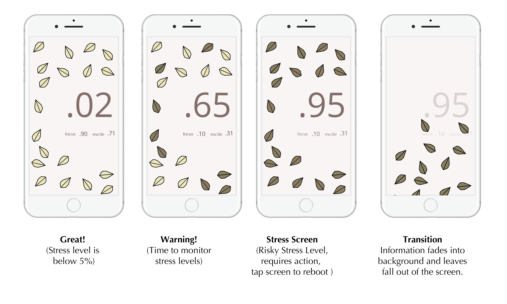

What traits would our targeted audience have and when might they need a stress tracker?
Highly motivated and fashionable young women who might need something to tell them when they are working too hard. She might wear the wearable when she's at the local coffee shop working on her next big project. She's hard at work, but she still wants to look stylish just in case that cute barista is working. She wants to track her stress but doesn't want to announce the world that she's using a stress tracker.
What are stress wearables like on the market so far?
The classic example of a wearable is without a doubt the fitbit and the apple watch. They're also both watch-like. However, there are also other projects that attempting to be fashionable. There's "My Leaf" by Bellabeat which takes on a leaf motif (I learned about this after I decided on the leaves).
Mood Board

The first step was to gauge what might make people feel stressed or relaxed.
When I was creating this mood board, I first began to look for images of water droplets as they make me feel refreshed. I began looking for cool elements and found myself becoming more attracted to images featuring light pale colors. It soon evolved into me finding images of "ice" and thinking of ice queens and crowns. This drove me to the idea of trying to express women empowerment in the relaxed screen.
For me, when I’m stressed, I don’t want to be told it’s ok, I want someone to tell me to fight on and say you can do it. For the target user, she's the type who works hard but needs someone to tell her went she's working too hard and when she's thinking too much. What would make her less stressed would be to see that she's well on her way to completing her goal. She's got this. She just needs to remember what she's really working towards. She's strong, powerful, and still has her style.
When I was creating this mood board, I first began to look for images of water droplets as they make me feel refreshed. I began looking for cool elements and found myself becoming more attracted to images featuring light pale colors. It soon evolved into me finding images of "ice" and thinking of ice queens and crowns. This drove me to the idea of trying to express women empowerment in the relaxed screen.
For me, when I’m stressed, I don’t want to be told it’s ok, I want someone to tell me to fight on and say you can do it. For the target user, she's the type who works hard but needs someone to tell her went she's working too hard and when she's thinking too much. What would make her less stressed would be to see that she's well on her way to completing her goal. She's got this. She just needs to remember what she's really working towards. She's strong, powerful, and still has her style.
Font Study

There are two typefaces throughout my interface. There are two different typefaces used on the numbers. Readability is important for the text typeface, but the text typeface also needs to be able to set the aesthetic tone for the piece since there is very little text. Only one type for text is used because only one type of information is being displayed with text. There is no need to differentiate different types of information through different typefaces. Numbers are also important. A serif number font is too formal for the target audience, therefore I chose a sans serif number font.
Original Color Pallete

My original color palette was inspired by colors I associate with temperature. Relaxing colors are related to cool colors like blue while stress is connected with colors like red because of heat. Colors were initially pulled from these flower images, one red and one blue.
Final Color Pallete

My final color palette deviated from the red/blue association for heat as I began to pull in elements of dark and light. A full red screen with red elements and a full blue screen with blue elements did not have enough contrast. I chose colors that were more respective of the iconography of the leaves and the final flower. The final flower is blue which is reminiscent of the original temperature inspired palette.
Wearable Sketch 1
The initial idea is for the wearable to look like a golden leaf headband. It would be like a crown, so that the wearer feels like queen (and fashionable) when she wears it. It's also not that obvious it's a wearable to track stress. The stress sensor is hidden behind her ear and is encased within the headband. The main issue with the initial wearable sketch is that there is no visual indicator of how you're stressed. She would have to look at her phone or in the mirror and if she's in the zone, the stress sensor could be going off for hours and she would never know!
Wearable Sketch 2

The final wearable prototype is a leafy headband crown (adjusted)! We have larger leaves so that one of the leaves can be a sensor. This sensor is a part of the headband and can be removed from the headband's crown by unvelcroing some adjacent leaves. The sensor leaf is still connected to the crown via a cord. She can pull the cord behind her ear and the leaf's color should be visible in her peripheral view. The sensor changes color depending on how stressed she is. When she has reached her stress capacity and needs to take a break, the leaf will turn an ugly brown so she'll want to reach for her smartphone to revert it back to a nicer color. She can also turn off the sensor and wear it as a fashionable accessory all day.
Screen Sketches v.3
Since the wearable requires the user to turn on the sensor, the user already knows stress
is being monitored. It is designed to be used in a
casual setting and the user is not
likely to care about highly-technical
terms so terms are pared down
to be simple. Metaphorically, if you grow a plant,
sometimes, it’ll show spots when
it’s getting sick. You can always
start taking better care of it
and it can return to its original
state. But, when you start to ignore
what is unhealthy, things
start to wither and dry up. But when you
refresh you look up
and you can begin to see the
fruits of your work and see that
what’s really drying up on the floor
are the unimportant things. Then you start over and you can begin to work fresh. The idea is that this is mimicking
the idea of turning a weakness
into a strength and how you have
to get through tough times to bloom,
empowering young women
(even if she’s just studying).
Screen Protoype
Since, the beginning of the project, I had these fallen leaves that were spread on the ground. The stressed screen was an indicator of stress, but I also saw it as a wallpaper. It's not too intrusive that it distracts you and if someone passed by they might think something like, "oh this girl has a nice graphical wallpaper." It has some wallpaper like qualities.
One of the biggest issues with this iteration is that there is a bit of a disconnect between the stress screen and the relaxed screen. There are two different worlds, the world of the fallen leaves and the world of the tree branch with the abstract blue flower. While I saw this as two views, one as looking down and then when you relax, you can look up. There isn't a strong transitional cue as to why we're looking up a tree. How did we get there? And why are there green leaves on this tree?
One of the biggest issues with this iteration is that there is a bit of a disconnect between the stress screen and the relaxed screen. There are two different worlds, the world of the fallen leaves and the world of the tree branch with the abstract blue flower. While I saw this as two views, one as looking down and then when you relax, you can look up. There isn't a strong transitional cue as to why we're looking up a tree. How did we get there? And why are there green leaves on this tree?
The Final Sketch (as a story)
One day, Isadora found herself working at her favorite cafe.
An hour earlier at her apartment, she sprayed her favorite perfume and applied her favorite lipstick. Today was game day. It was going to be a battle. She has a major deadline to complete today, and she has always been called a work-a-holic. She's always wanted something to track her stress, but the stress-tracking bracelet her friend recommended didn't suit her style and always clashed with her outfits. She wasn't being shallow, but she wanted to feel her best when working and a tech-inspired wristband always distracted her from her work.
And then it caught her eye.
That golden leaf headband always made her feel like a queen. She reached for it from her dresser and she was off. Yep, it was a stress detector, but most people didn't know that. Most of her friends were surprised that the threads on the headband could change color and thought it was just a cool accessory.
Back at the cafe, Isadora was hard at work. She pulled out the sensor leaf and at the corner of her eye she could see a red color. It was time to monitor her stress. She pulled out her app and she could see that she had some leaves were brown. Some of her leaves were withering. She clasped the sensor leaf in her hand and her eyes fell on the the big .65 on her screen. It's ok, I got this, she told herself. My focus percentage is good and it seems like my excitement percentage is good as well (she wasn't quite sure how her excite was being measured).
An hour passed and her stress seemed to be under control, when suddenly she received a call from one of her partners. She had to redo one of the pieces. A non-existent future of regrets filled her mind. I can't-
Brown.
She was cut off. Her headband had an ugly brown leaf and her screen was full of brown leaves. It was like Fall. And like the analogy of Fall, she would fall. Ugh. In frustration, Isadora tapped the screen and the brown leaves began to slide out of the screen. And she was faced with an empty gray screen. Great, even the app froze. Isadora placed her phone on the table and slouched in her chair.
Suddenly, the screen turned a pale yellow and light blue leaves flew in from the bottom of the screen as if they were dancing. Light in the the darkness, she thought. The words re:birth started to fade in. And then she remembered. She could be revived. She could be revitalized. Like a phoenix she could have her rebirth and become better than before. After Fall and Winter came Spring. She could emerge from the darkness and come into the light. She just had to throw out the unnecessary baggage. She began to see herself in the flower that was assembling and by the time the flower animation finished and the flower was sitting firming at the bottom of the stage, she was ready to begin. She was strong. She was like a queen wearing her crown. She was in charge. Her focus and excitement went up and her stress was down.
10 p.m., just when the cafe was closing, she hit send. It was perfect and time flew by fast (in a good way). The leaf was a light yellowish-green. As she was packing her stuff, the barista cleaning smiled at her, she pulled her hair out of it's updo, shaking out her hair (with the pretty sensor leaf in sight) and exited stage left shining.
She nailed it.
An hour earlier at her apartment, she sprayed her favorite perfume and applied her favorite lipstick. Today was game day. It was going to be a battle. She has a major deadline to complete today, and she has always been called a work-a-holic. She's always wanted something to track her stress, but the stress-tracking bracelet her friend recommended didn't suit her style and always clashed with her outfits. She wasn't being shallow, but she wanted to feel her best when working and a tech-inspired wristband always distracted her from her work.
And then it caught her eye.
That golden leaf headband always made her feel like a queen. She reached for it from her dresser and she was off. Yep, it was a stress detector, but most people didn't know that. Most of her friends were surprised that the threads on the headband could change color and thought it was just a cool accessory.
Back at the cafe, Isadora was hard at work. She pulled out the sensor leaf and at the corner of her eye she could see a red color. It was time to monitor her stress. She pulled out her app and she could see that she had some leaves were brown. Some of her leaves were withering. She clasped the sensor leaf in her hand and her eyes fell on the the big .65 on her screen. It's ok, I got this, she told herself. My focus percentage is good and it seems like my excitement percentage is good as well (she wasn't quite sure how her excite was being measured).
An hour passed and her stress seemed to be under control, when suddenly she received a call from one of her partners. She had to redo one of the pieces. A non-existent future of regrets filled her mind. I can't-
Brown.
She was cut off. Her headband had an ugly brown leaf and her screen was full of brown leaves. It was like Fall. And like the analogy of Fall, she would fall. Ugh. In frustration, Isadora tapped the screen and the brown leaves began to slide out of the screen. And she was faced with an empty gray screen. Great, even the app froze. Isadora placed her phone on the table and slouched in her chair.
Suddenly, the screen turned a pale yellow and light blue leaves flew in from the bottom of the screen as if they were dancing. Light in the the darkness, she thought. The words re:birth started to fade in. And then she remembered. She could be revived. She could be revitalized. Like a phoenix she could have her rebirth and become better than before. After Fall and Winter came Spring. She could emerge from the darkness and come into the light. She just had to throw out the unnecessary baggage. She began to see herself in the flower that was assembling and by the time the flower animation finished and the flower was sitting firming at the bottom of the stage, she was ready to begin. She was strong. She was like a queen wearing her crown. She was in charge. Her focus and excitement went up and her stress was down.
10 p.m., just when the cafe was closing, she hit send. It was perfect and time flew by fast (in a good way). The leaf was a light yellowish-green. As she was packing her stuff, the barista cleaning smiled at her, she pulled her hair out of it's updo, shaking out her hair (with the pretty sensor leaf in sight) and exited stage left shining.
She nailed it.
Screen Transitions


Main Takeaways
This project taught me a lot about how to carry through and develop a concept. Since the beginning I had this idea of a leafy headband and leaves spread out on the stress-screen. I wanted to the leaves to be decorative but also a monitor and I wanted there to be a strong connection between the leaf headband and the app.
I wanted this app to turn stress into something empowering. I originally thought of power poses that induce high power. And in my first screens iterations I had a set of instructions for the user to strike a power pose and a way to stretch and refresh.
However, I ended up playing with the idea of the leaves and the narrative that could be built up with that. I discovered I was able to to convey the same message without being as literal. The goal of the app isn't to do a power pose, but for the user to be refreshed and revived.
I wanted this app to turn stress into something empowering. I originally thought of power poses that induce high power. And in my first screens iterations I had a set of instructions for the user to strike a power pose and a way to stretch and refresh.
However, I ended up playing with the idea of the leaves and the narrative that could be built up with that. I discovered I was able to to convey the same message without being as literal. The goal of the app isn't to do a power pose, but for the user to be refreshed and revived.